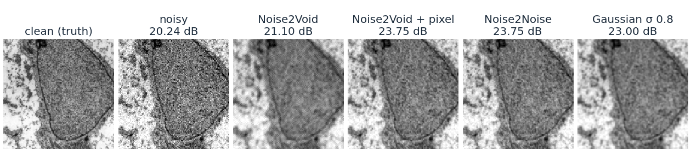
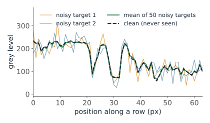
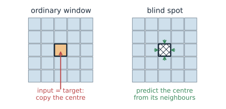
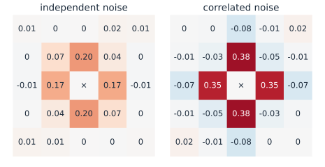
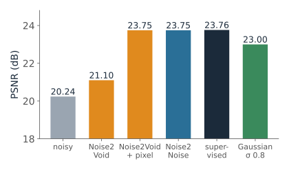
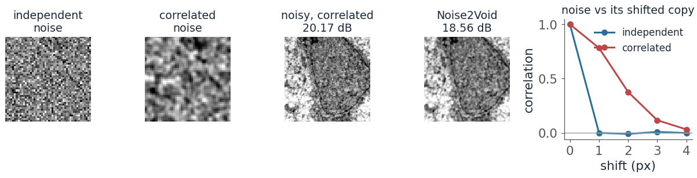
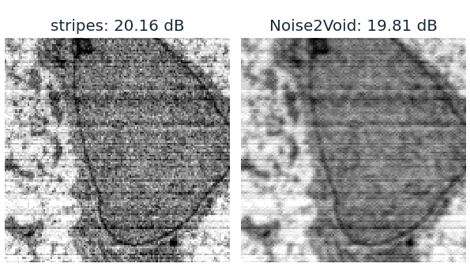

Supervised denoising (classical filters: the denoising unit): train a network on pairs (noisy image, clean image) with a squared error.
Where do clean images come from? A long exposure: but cells move, fluorophores bleach, and phototoxicity is the reason we image with little light in the first place. For many experiments the clean image does not exist; what we have is many noisy images.

The demo’s micrograph crop with noise of σ = 25 grey levels, and what the methods of this lecture make of it.
Noise2Noise: noisy targets are enough
Train with pairs of noisy images of the same scene: input one, target the other.
The network cannot predict the target’s noise: it is independent of the input.
The best it can do is predict the average of all targets it could have seen: the clean image.
Squared error: the noise only adds a constant to the loss. Same minimum, more noise in the training.
Pairs: two quick exposures of a fixed sample, or two halves of the photons.

The math: why noisy targets work
Target y = s + n with clean value s and noise n, \mathbb E[n] = 0, \mathrm{Var}(n) = \sigma^2, independent of the input x. For any prediction f(x):
The noisy-target loss is the clean-target loss plus a constant: the same minimiser.
Needed: zero-mean noise, independent of the input. The squared error gives the mean; an absolute error gives the median (robust to outliers, also unbiased for symmetric noise).
Finite data: the variance of the noisy targets slows learning, as noisy labels do.
Noise2Void: one noisy image
No second image. Use the noisy image as input and target?
Then the best prediction of a pixel is the pixel itself: the network learns to copy, and nothing is denoised.
Blind spot: predict each pixel from its neighbours only. Its own noise is now hidden from the input, and it is independent of the neighbours’ noise.
The neighbours carry the signal (images are smooth and repetitive); they carry nothing about this pixel’s noise.

Noise2Void is the masked image modelling of this day’s first unit, with one-pixel masks.
The math: the blind-spot loss
Pixel i, noisy value y_i = s_i + n_i; prediction f(\mathbf y_{-i}) from all other pixels. If n_i has mean 0 and is independent of\mathbf y_{-i}:
Among blind-spot predictors, the noisy target picks the same one as a clean target would (the best blind-spot predictor). The demo shows this: 21.10 dB with the noisy target, 21.11 dB with the clean one.
Without the blind spot, f may use y_i itself, the independence fails, and f(\mathbf y) = y_i gives loss 0.
Holds for any noise that is independent from pixel to pixel: Gaussian, Poisson (photon counts), mixed. Correlated noise breaks it.
Try it: Noise2Void on one image
What the filter learns
The demo’s filter is linear: 25 weights on a 5 × 5 window, fitted by least squares to one noisy image. Trained the Noise2Void way:
weights 0.17–0.20 on the four direct neighbours, 0.04–0.08 on the diagonals, almost 0 further out; they add up to 1.00: a weighted average of the neighbours, learned from the image.
the noise drops, but the result is smoother than a Gaussian blur that may use the pixel: 21.10 dB against 23.00 dB.
Without the blind spot the fit is exact: centre weight 1.00, all others 0.

The price of the blind spot
The pixel’s own value is the best single piece of evidence about it, and the blind spot throws it away: Noise2Void 21.10 dB, a filter of the same size that may use the pixel (clean target) 23.76 dB.
Put the pixel back: the blind-spot prediction and the noisy pixel are two independent estimates of the same clean value. Mix them, trusting each by its reliability:
Needs the noise level σ, from the camera noise unit’s calibration. Demo: c = 0.45, 23.75 dB, as good as Noise2Noise and the clean target.

The math: two independent estimates
Clean value s; the prediction \hat s = s + e with error variance v = \mathbb E[e^2]; the pixel y = s + n with \mathrm{Var}(n) = \sigma^2; e and n independent (the blind spot).
Any mix \hat s + c(y - \hat s) = s + (1 - c)e + cn has error variance (1 - c)^2 v + c^2\sigma^2, smallest at c = v/(v + \sigma^2), where it equals v\sigma^2/(v + \sigma^2): smaller than both v and \sigma^2.
v is unknown, but \mathbb E[(y - \hat s)^2] = v + \sigma^2 is measurable on the image: c = 1 - \sigma^2/\mathbb E[(y - \hat s)^2].
Demo: the prediction alone has 21.10 dB, an error sd of 255 \cdot 10^{-21.10/20} = 22.5 grey levels; with \sigma = 25: c = 22.5^2/(22.5^2 + 25^2) = 0.45, and the mixed error sd is 22.5 \cdot 25/\sqrt{22.5^2 + 25^2} = 16.7, i.e. 23.7 dB (the demo measures 23.75 dB).
Noise2Void as pseudocode
repeat for every batch of noisy patches:
pick a few random pixels in each patch # e.g. 1 % of them
masked = patch with each picked pixel replaced by a random neighbour's value
prediction = network(masked)
loss = mean over the picked pixels of (prediction − patch)² # noisy targets
update the network by backpropagation
denoised image = network(noisy image) # no masking at test time
Replacing the pixel hides it: a blind spot for any network, without changing the architecture.
The loss is computed only at the picked pixels, as in masked image modelling.
When it fails: correlated noise
The blind spot assumes that the neighbours know nothing about this pixel’s noise. If the noise is correlated (blurred noise after demosaicing, resampling, a denoising step in the camera; row noise of a scientific camera; scan lines):
the neighbours predict the noise, and the filter learns to reproduce it. Demo: weights 0.35–0.38 on the direct neighbours, and the result (18.56 dB) is worse than the noisy image (20.17 dB).
Stripes (one offset per row): the filter averages along the row and keeps them (19.81 dB, noisy 20.16).
Noise2Noise is unaffected (22.06 dB): its target’s noise is independent of the input.

Check the noise first
Take a background region (no structure), subtract its mean, and correlate it with a copy shifted by one pixel, horizontally and vertically. Independent noise: about 0. The demo’s correlated noise: 0.78.
Look at the noise: blobs, stripes, a grid pattern from the camera’s readout channels are all correlated noise.
Use the raw data: no compression, no camera-side denoising, no resampling before denoising.
Structured artefacts that are not noise (out-of-focus haze, autofluorescence) are signal for the blind spot: it keeps them.
For row noise, hide a whole line instead of a pixel: the mask must hide everything that shares the pixel’s noise.

Networks, not linear filters
A linear filter is a weighted average: it cannot keep an edge sharp while smoothing beside it. On the demo’s test image non-local means reaches 28.22 dB, every linear filter at most 24.85 dB.
A U-Net with the same blind-spot training learns nonlinear, content-dependent averaging over a large window, and beats the classical filters on real data.
The same idea: the diffusion models’ denoiser is trained on noise added to clean images; Noise2Noise and Noise2Void train denoisers where no clean image exists.
method (test image, σ 25)
dB
noisy
20.24
Noise2Void, linear 5 × 5
23.10
Noise2Void + pixel
24.85
supervised linear 5 × 5
24.87
non-local means (h 25)
28.22
What you may measure
A denoised image is an estimate (what you may measure): smoothing changes peaks, sizes and counts; a network can also invent plausible texture.
Self-supervised training reduces one risk (no clean training set from another sample that may differ from yours) but not this one.
Practice: segment or detect on the denoised image, measure intensities on the raw one; validate on a test sample with a known truth (beads, a long exposure of fixed cells).
Report the method and keep the raw data. Never compare intensities between images denoised by differently trained networks.
Summary
Idea
In one line
Noise2Noise
a second noisy image is as good a target as a clean one: the noise adds only a constant to the loss
Noise2Void
one noisy image, a blind spot: predict each pixel from its neighbours only
Why it works
the pixel’s noise is independent of its neighbours: the noisy-target loss is the clean loss + σ²
The price
the pixel’s own value is lost; mix it back with the known noise level
Failure
correlated noise, stripes and artefacts: the neighbours predict them, the filter keeps them
Practice
check the noise is independent; raw data; measure on raw images
Next: the fine-tuning day adapts pretrained networks to your images.